LANraragi Manga Server
Preface
Recently, I’ve been looking into home media libraries, and most tutorials focus on NAS, but most of the applications actually run on Docker.
Now, I have the following demands for reading manga/doujinshi:
- I have a large collection of manga archives on my computer and want various devices able to access these resources. —— A server capable of transmitting images via HTTP.
- I want to manage the manga directory according to my preferences, not the rules of the server software.
- When browsing manga on my phone/tablet, I want an easy-to-use interface. —— A user-friendly client or a Web UI.
- The client should have a random manga selection feature. —— Due to the abundance of collected manga, randomly picking one for leisure is the most convenient.
Considering these, I chose LANraragi. Although Komga, Kavita, and Tachidesk (Sorayomi) are also open-source manga servers, they didn’t quite meet my expectations.
This article includes some excerpts from the official documentation and my own insights.
LANraragi
LANraragi offers many features, but I only need a few of them:
| Features | Required |
|---|---|
| Upload local manga | ✅ |
| Download online manga | ❌ |
| Adding metadata (tagging) | ❌ |
All manga are uploaded locally by me. I just want to read manga and don’t need to categorize them with tags.
Installation
Docker compose:
1 | version: "3" |
/home/koyomi/lanraragi/databaseis the directory where LANraragi stores Redis data. Just create a volume for it.- The
/home/koyomi/lanraragi/contentdirectory stores:- All manga archives. LANraragi can recursively scan subdirectories —— file management is based on my preferences.
- Thumbnails of manga, by default stored in
/home/koyomi/lanraragi/content/thumb.
- Since the thumbnail directory can be configured, the
contentdirectory only contains my own archives. I set permissions to read-only and map the host directory where manga files are stored. LANraragi detects file changes on its own, and I can collect mangas just like before.
- Using Docker Compose allows for recording the startup command, making it convenient for reuse later.
- Stack in Portainer is a synonym for Docker Compose. After modifying Docker-compose file, Portainer will redeploy it, which is convenient. (Essentially, it’s a combination of down + up, but data won’t be lost because they are stored in volumes.)
Configurations
On the first launch, the admin password is kamimamita. After logging in, go to the configuration page:
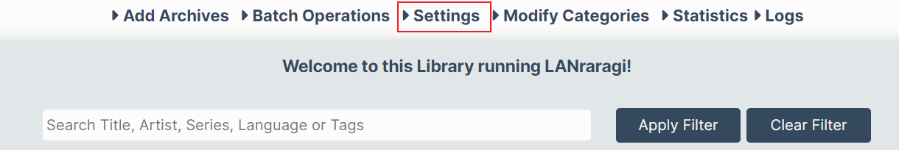
Firstly, a reminder: don’t forget to save your configuration changes:
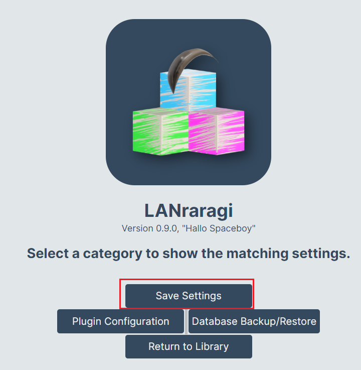
Start by changing the initial password:
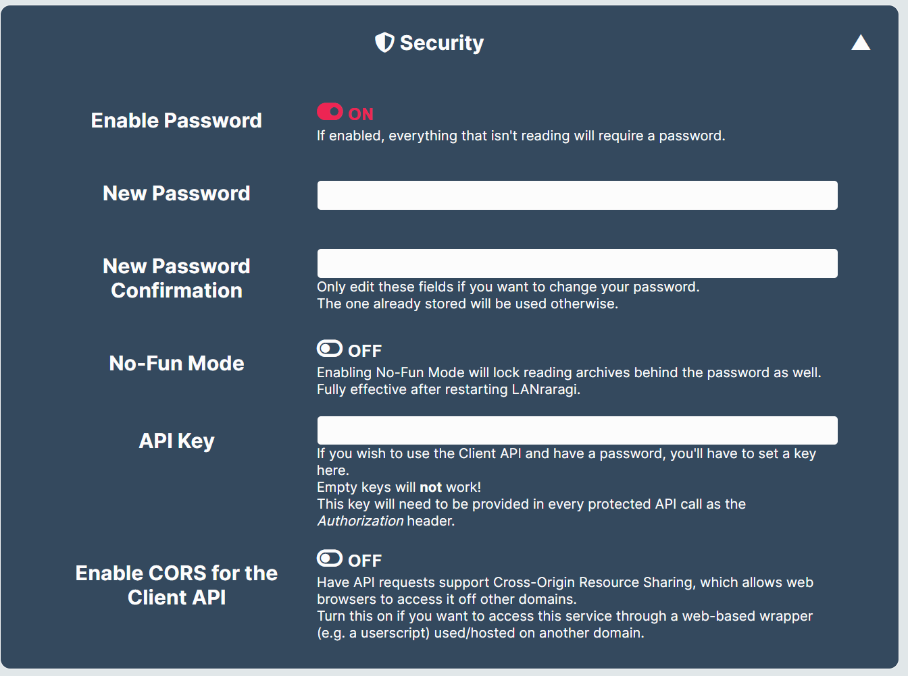
Other configurations are as follows:
Global Settings
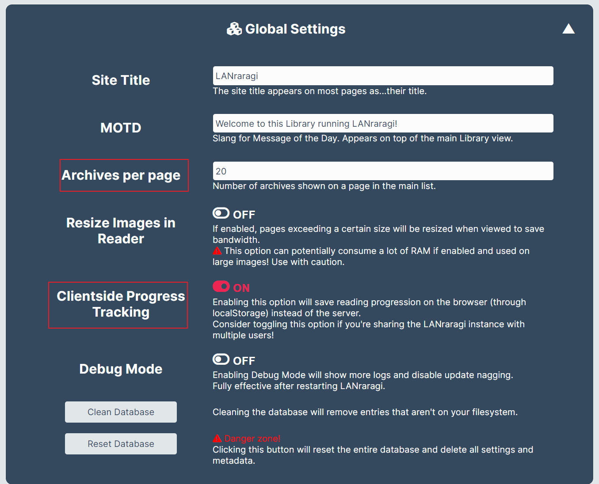
- Set
Archives per pageto 20; a default of 100 is too many. - The reading history feature is not needed, so I store them on the client side to save server resources.
Archive Files
No need to change.

Tags and Thumbnails
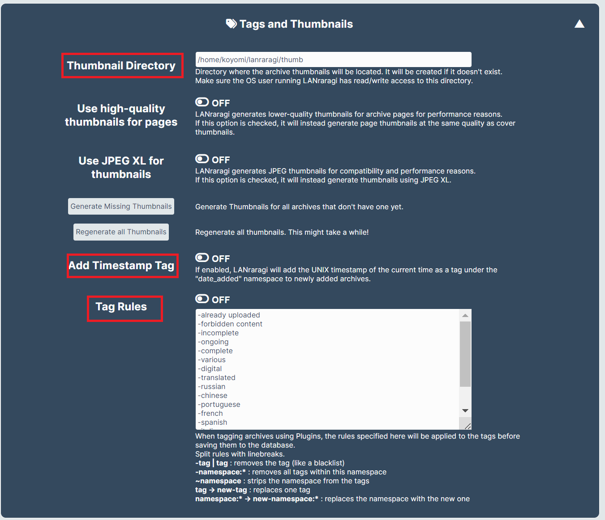
- The point here is to change the thumbnail directory, due to the read-only mapping during Docker startup and the default thumbnail directory in
content. - Turn off the two options related to tags.
Background Workers
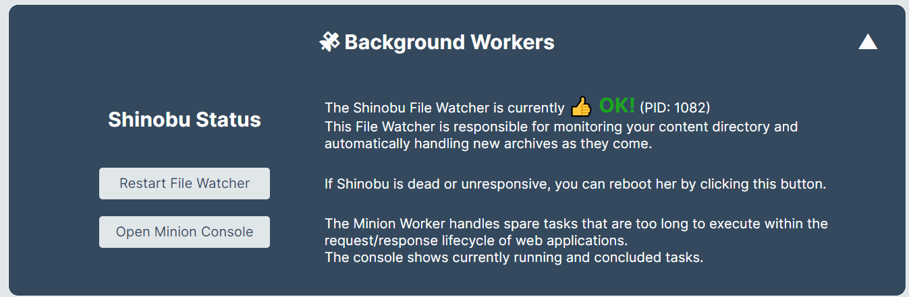
This is used to monitor changes in manga archives in the content directory. If new resources are not processed promptly, a manual restart may be needed.
Plugin Configuration
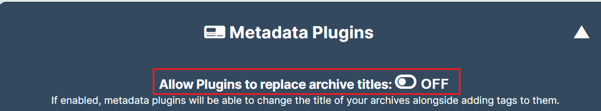
Turn this off as it’s not needed.
All plugins are disabled by default, So you may leave this setting as before.
Usage
When mounting your own manga archives for the first time in the content directory, LANraragi requires significant resources to process metadata and thumbnails. According to Portainer’s monitoring data, it used 2-3GB of memory and 2000% CPU (not quite sure how this CPU resource is calculated).
Functions on the homepage:
- Search;
- Display random mangas each time;
- List mode / thumbnail mode.
Reader configuration:
1️⃣ Default is pagination mode.
2️⃣ I prefer infinite scrolling mode:
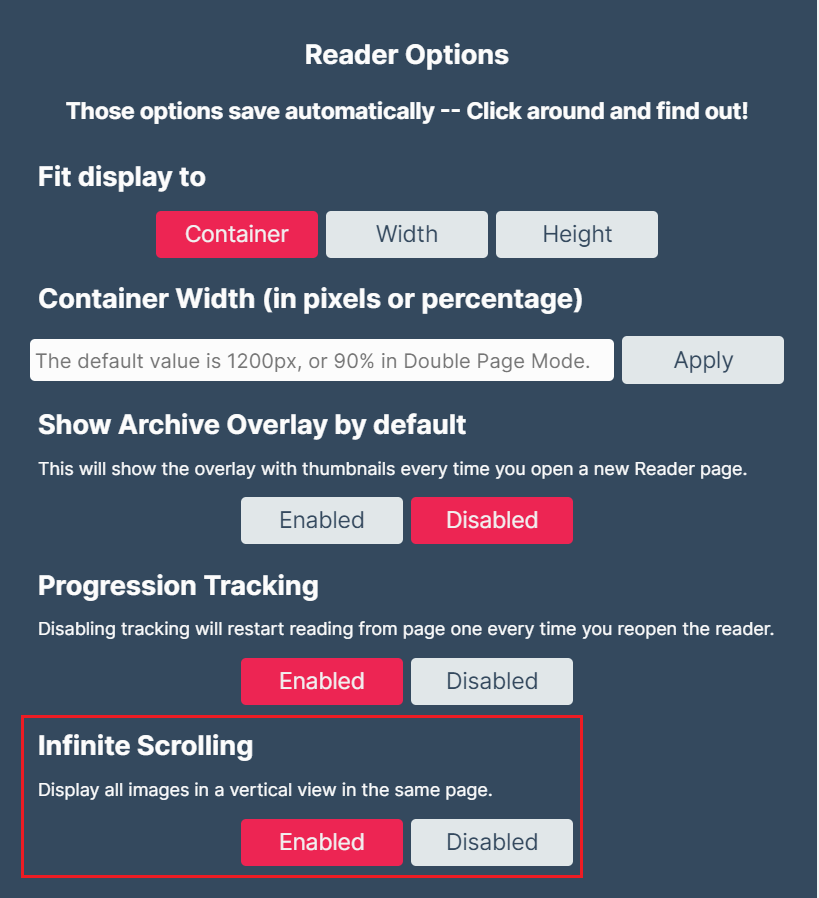
Sharing With Other Devices
My Docker runs in a Linux virtual machine, and due to Docker port mapping, LANraragi can be accessed on the host machine through the virtual machine’s IP.
Virtual Machine NAT Passthrough
To access LANraragi from other devices, NAT passthrough is needed to map the virtual machine’s port to the host’s port:
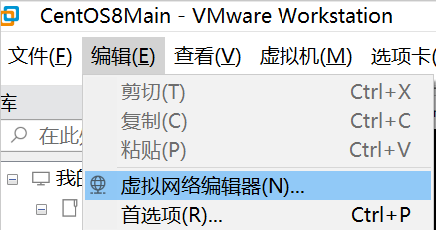
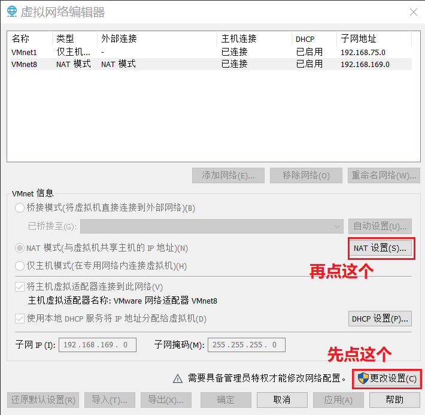
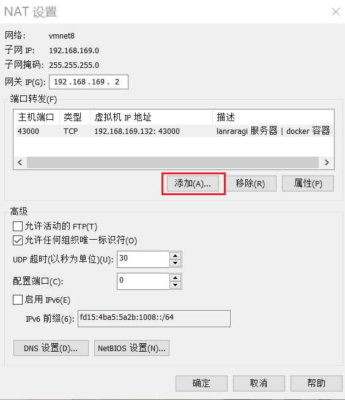
As configured in the images, map port 43000 on the virtual machine to port 43000 on the host.
Local Firewall
Windows Firewall will block this port by default, so configure a new rule:
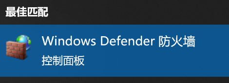
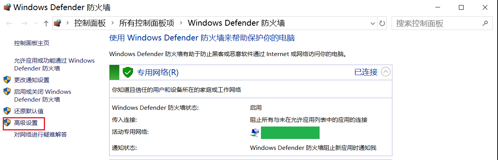
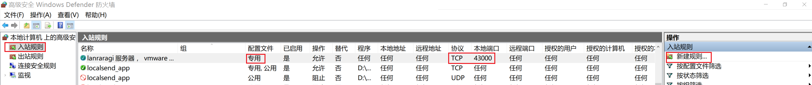
Create a new rule in inbound rules: open port 43000/tcp for private networks (home networks).
Afterward, you can access LANraragi from your phone via computerIP:43000.
The homepage of the mobile web UI is not great, but you can use the officially recommended client. However, since I only want to read randomly, it’s not a big issue. And the interface for reading manga is handy, So I will take it.